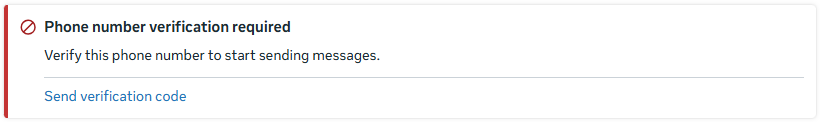

1. Buy a business phone number
Your WhatsApp number needs to be one that customers can message and that Meta can verify.
- Buy a number from a providerWe'd recommend Bird or Twilio, though other providers work too, such as your existing provider, Vonage, BT or Virgin.
- Confirm the number can receive an SMS or a voice callMeta sends a verification code to it.
- Confirm the number isn't already registered on WhatsAppPersonal or business. A number still in use on the WhatsApp or WhatsApp Business app can't be connected.
- Avoid VoIP, Skype or virtual numbersThese often fail Meta's verification.
2. Add and verify the number
Do this in Meta Business Suite, in the business portfolio you set up in the Meta steps guide.
Open your business settings
In Meta Business Suite, go to your business account settings and select Category and Business description.
Start verification
Select Next to begin phone number verification.
Enter the number
Select your country code and enter the number you bought.
Choose how to get the code
Choose Text message or Phone, then click Next.
Enter the code
Enter the verification code once you receive it and click Next.
Done
The number is now verified and ready to use.
Once the number shows as verified, send it to Focus Group, along with the details listed under What to send us. We'll connect it to your AI agent from there.
If the number shows Unverified
An Unverified number can't be connected, so it's worth checking before you send it to us. It's fine if the display name is still in review.
Open your phone numbers
Go to WhatsApp Manager, then Account tools → Phone numbers.
Open the Profile tab
Click your number (or the cog next to it) and open the Profile tab.
Send the code
Where it says Phone number verification required, click Send verification code and enter the code Meta sends.

Check the display name
On the same tab, if the display name shows Rejected, click Edit, change it to your business name and resubmit.